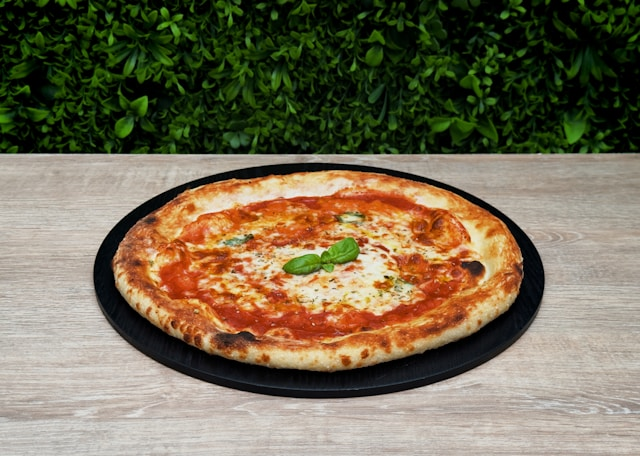

Home
Pizza

Classic Margherita Pizza
The Classic Margherita Pizza is a simple yet elegant Neapolitan-style pizza. It is traditionally recognized for representing the colors of the Italian flag: green (fresh basil), white (fresh mozzarella), and red (tomato sauce). It features a thin crust, is baked at high heat, and is known for its fresh, balanced flavor.
Ingredients & Instructions
- Dough
- All-Purpose o Bread Flour
- Water (Lukewarm)
- Dry Active Yeast
- Salt
- Olive Oil
Preparing the Dough
- Activate the Yeast: In the lukewarm water, mix the yeast and a pinch of sugar (if using sugar). Let it sit until foamy (bubbly) for 5-10 minutes.
- Mix Ingredients: In a large mixing bowl, combine the flour and salt. Pour in the yeast mixture and olive oil. Mix until a shaggy dough forms.
- Kneading: Transfer the dough to a floured surface. Knead for 5-7 minutes until the dough is smooth and elastic.
- Rising: Lightly oil a bowl. Place the dough inside, cover with a clean cloth, and let it rise in a warm spot for 1.5 – 2 hours, or until it has doubled in size.
- Divide: Once risen, divide the dough into two (2) equal portions.
- Toppings
- Pizza Sauce (Tomato Sauce)
- Fresh Mozzarella (sliced/diced)
- Extra Virgin Olive Oil
- Fresh Basil Leaves
- Parmesan Cheese (grated, optional)
Assembly and Topping
- Preheat Oven: Preheat the oven to its highest temperature (ideally, 250°C / 480°F or higher). If you have a pizza stone or steel, place it in the oven while it preheats.
- Roll out the Dough: Using your hands or a rolling pin, flatten each dough portion into a 10-12 inch circle.
- Toppings: Transfer the dough to a baking sheet (or pizza peel). Spread a thin layer of pizza sauce, leaving the edges for the crust. Arrange the slices of fresh mozzarella.
- Baking
- Bake: Carefully slide the pizza into the hot oven (onto the pizza stone/steel if using).
- Baking Time: Bake for 8–15 minutes, depending on your oven's heat, until the cheese is melted and slightly browned, and the crust is puffed up and crispy.
- Final Touches: Once cooked, remove the pizza. Gently drizzle with a little extra virgin olive oil. Scatter the fresh basil leaves on top.